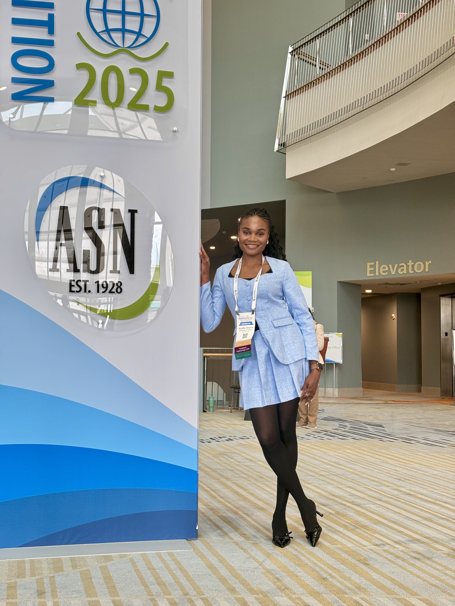
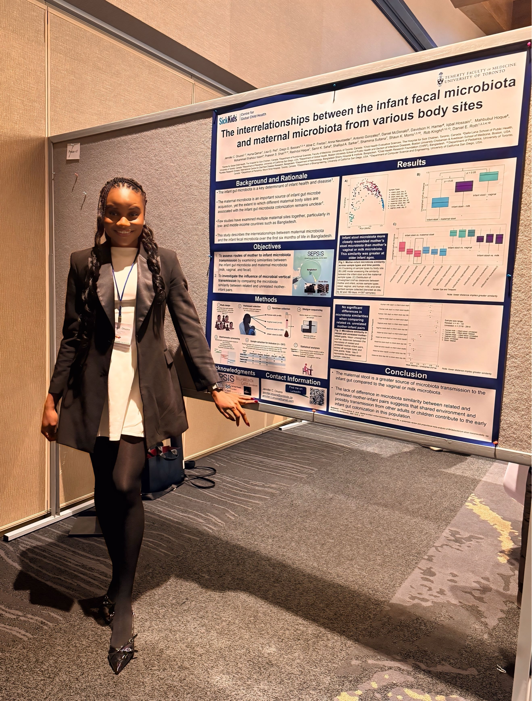
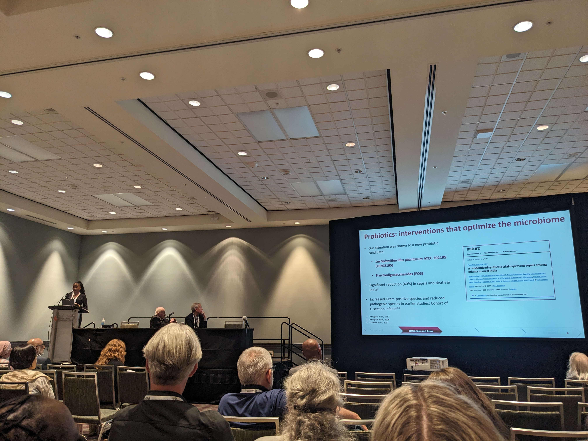

Selected Presentations
Oral & Poster
American Society for Nutrition Annual Conference, Orlando, USA, May–June 2025
Robert Suskind & Leslie Lewinter-Suskind Pediatric Nutrition Award · Emerging Leaders in Nutrition Science Poster Finalist
VIP Invited
13th Microbiome & Probiotics R&D and Business Collaboration Forum, San Diego, USA, October 2025
Poster
IMPACTT Microbiome Conference, Canmore, Canada, September 2025
Travel Award Recipient
Poster
Child Health Evaluative Sciences & Neurosciences Retreat, Toronto, Canada, June 2025
Oral
Department of Nutritional Sciences, University of Toronto, November 2024



